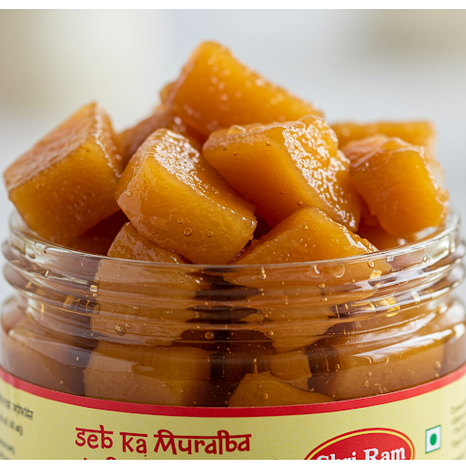

Our Murabba Collection
Discover our range of traditionally prepared Murabba varieties, rich in natural goodness and flavor

Amla Murabba
Indian Gooseberry Preserve rich in natural Vitamin C and antioxidants. Known for boosting immunity and digestion.
Natural
Medicinal
Fruit Based

Gajar Murabba
Carrot preserve packed with beta-carotene and natural sweetness. Excellent for eye health and skin nourishment.
Natural
Vegetable
Eye Health

Harad Murabba
Chebulic Myrobalan preserve with traditional Ayurvedic benefits. Supports digestive health and natural detoxification.
Natural
Medicinal
Digestive

Belgiri Murabba
Wood Apple preserve that combines unique flavor with nutritional benefits. High in dietary fiber and minerals.
Natural
Fruit Based
Heart Healthy
Seb Murabba
Apple preserve made with hand-picked apples. Contains natural pectin and antioxidants for heart and digestive health.
Natural
Fruit Based
Heart Healthy